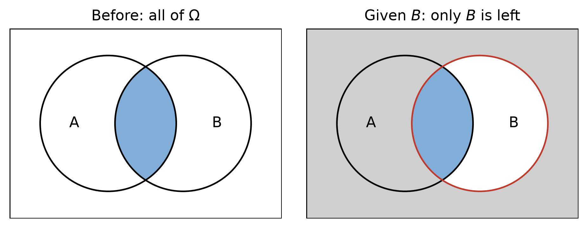
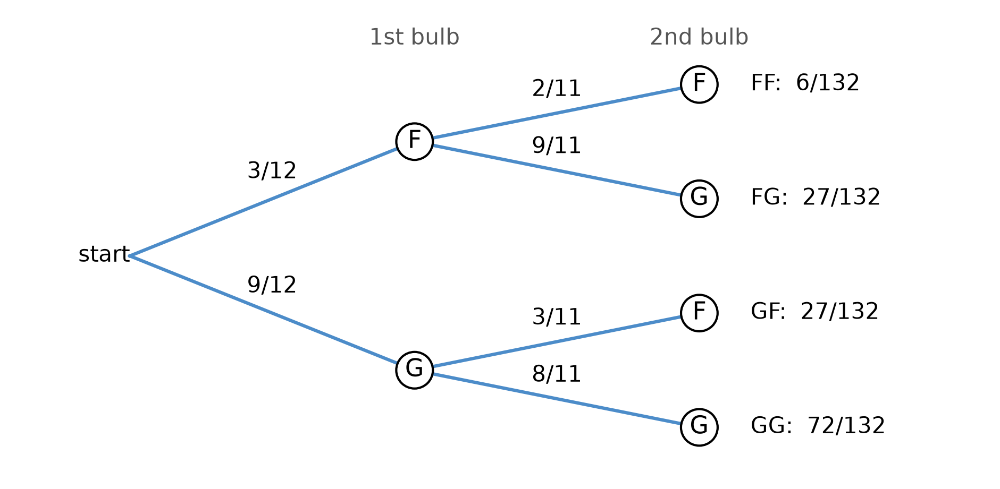

2 Conditional probability and Bayes’ theorem
\[ \newcommand{\E}{\mathbb{E}} \newcommand{\Var}{\operatorname{Var}} \newcommand{\Cov}{\operatorname{Cov}} \newcommand{\Corr}{\operatorname{Corr}} \newcommand{\Prob}{\mathbb{P}} \newcommand{\R}{\mathbb{R}} \]
Go back to the online store of Example 1.3: 40% of orders use a promo code, 55% come through the mobile app, and 20% do both. Priya, a marketing analyst there, sees that a customer has just opened the app. Should she still count on a 40% chance that this order uses a promo code?
No. Among app orders, the ones with a promo code make up 0.20 out of 0.55, so the chance is \[ \frac{0.20}{0.55}\approx 0.36 . \] Knowing “this is an app order” moved the probability from 0.40 to about 0.36. A small move, but a real one, and that one division is the starting point for everything below: conditional probability, independence, the law of total probability and Bayes’ theorem.
2.1 Conditional probability
Definition 2.1 (Conditional probability) Let \(B\) be an event with \(\Prob(B)>0\). The conditional probability of \(A\) given \(B\) is \[ \Prob(A\mid B)=\frac{\Prob(A\cap B)}{\Prob(B)}. \]
Read \(\Prob(A\mid B)\) as “the probability of \(A\) given \(B\)”. The idea is in Figure 2.1. Once we know that \(B\) has occurred, every outcome outside \(B\) is ruled out. \(B\) becomes the new sample space, and the only part of \(A\) that can still happen is \(A\cap B\). Dividing by \(\Prob(B)\) rescales things so that the new space has total probability 1 again.
When all outcomes are equally likely (Definition 1.5), the division turns into a ratio of counts: \(\Prob(A\mid B)=|A\cap B|/|B|\). Roll the two dice of Lecture 1 (Example 1.4), one red and one blue, and suppose you can see only the red one. It shows a 6. Now the sum is at least 10 exactly when the blue die shows 4, 5 or 6, which is 3 of the 6 remaining outcomes, so the probability is \(1/2\). Before you looked at the red die it was \(6/36=1/6\).
Example 2.1 (Promo code given app, and the other way round) Take the store of Example 1.3, with \(A\) “the order uses a promo code” and \(B\) “the order comes through the app”. Find
- \(\Prob(A\mid B)\);
- \(\Prob(B\mid A)\);
- \(\Prob(A^c\mid B)\).
Solution. (a) \(\Prob(A\mid B)=0.20/0.55=4/11\approx 0.364\). (b) \(\Prob(B\mid A)=0.20/0.40=0.50\). (c) The app orders without a promo code have probability \(\Prob(A^c\cap B)=0.35\), found in Example 1.3(c). So \(\Prob(A^c\mid B)=0.35/0.55\approx 0.636\). Notice that (a) and (c) add up to 1.
Parts (a) and (b) answer different questions. (a) asks: among app orders, what share used a promo code? (b) asks: among promo-code orders, what share came through the app? The numerator is the same, the denominator is not. Swapping \(\Prob(A\mid B)\) and \(\Prob(B\mid A)\) is the most common mistake of this whole lecture, and you will find it in newspapers too. “Half of promo-code users order through the app” is true here. “Half of app users use a promo code” is false: it is 36%.
Part (c) is no accident. For a fixed \(B\), conditional probabilities obey all the rules of Lecture 1.
Theorem 2.1 (Conditional probability is a probability) Fix an event \(B\) with \(\Prob(B)>0\). Then \(A\mapsto\Prob(A\mid B)\) satisfies the three axioms of Definition 1.4. So every rule of Theorem 1.2 holds for it, for example \(\Prob(A^c\mid B)=1-\Prob(A\mid B)\) and \(\Prob(A_1\cup A_2\mid B)=\Prob(A_1\mid B)+\Prob(A_2\mid B)-\Prob(A_1\cap A_2\mid B)\).
Proof
Axiom 1: \(\Prob(A\cap B)\ge 0\) and \(\Prob(B)>0\), so the ratio is non-negative. Axiom 2: \(\Prob(\Omega\mid B)=\Prob(\Omega\cap B)/\Prob(B)=\Prob(B)/\Prob(B)=1\). Axiom 3: if \(A_1,A_2,\dots\) are pairwise mutually exclusive, so are \(A_1\cap B, A_2\cap B,\dots\), and their union is \((A_1\cup A_2\cup\dots)\cap B\). Apply axiom 3 for \(\Prob\) to these pieces and divide by \(\Prob(B)\).
The complement goes in front of the bar, never behind it. \(\Prob(A\mid B^c)\) is not \(1-\Prob(A\mid B)\). In the store, \(\Prob(A\mid B^c)=\Prob(A\cap B^c)/\Prob(B^c)=0.20/0.45\approx 0.444\), while \(1-\Prob(A\mid B)\approx 0.636\). Two unrelated numbers.
2.2 Multiplication rule
Turn the definition around and you get \(\Prob(A\cap B)=\Prob(B)\,\Prob(A\mid B)\). In practice this is how most joint probabilities are found. We think in steps: first \(B\) happens, then \(A\) happens given \(B\).
Theorem 2.2 (Multiplication rule) If \(\Prob(A)>0\) and \(\Prob(B)>0\), then \[ \Prob(A\cap B)=\Prob(A)\,\Prob(B\mid A)=\Prob(B)\,\Prob(A\mid B). \] More generally, if \(\Prob(A_1\cap\dots\cap A_{n-1})>0\), then \[ \Prob(A_1\cap A_2\cap\dots\cap A_n)=\Prob(A_1)\,\Prob(A_2\mid A_1)\,\Prob(A_3\mid A_1\cap A_2)\cdots\Prob(A_n\mid A_1\cap\dots\cap A_{n-1}). \tag{2.1}\]
Proof. The first line is Definition 2.1 multiplied by \(\Prob(A)\), or by \(\Prob(B)\). For Equation 2.1, write each conditional probability on the right as a fraction: \[ \Prob(A_1)\cdot\frac{\Prob(A_1\cap A_2)}{\Prob(A_1)}\cdot\frac{\Prob(A_1\cap A_2\cap A_3)}{\Prob(A_1\cap A_2)}\cdots\frac{\Prob(A_1\cap\dots\cap A_n)}{\Prob(A_1\cap\dots\cap A_{n-1})}. \] Each numerator cancels the next denominator, and only \(\Prob(A_1\cap\dots\cap A_n)\) is left. The denominators are positive: each of them is the probability of an event that contains \(A_1\cap\dots\cap A_{n-1}\), so it is at least \(\Prob(A_1\cap\dots\cap A_{n-1})>0\) by Theorem 1.2(3).
Equation 2.1 reads like a story. First \(A_1\) happens. Then \(A_2\) happens, given \(A_1\). Then \(A_3\), given both earlier ones. Each factor answers one question: what is the chance of the next step, given everything so far?
Example 2.2 (Birthdays, one person at a time) Kemal’s department has 10 people. Ignore 29 February, and assume each person’s birthday is equally likely to be any of the 365 days, whatever the others’ birthdays are. What is the probability that all 10 birthdays are different?
Solution. Line the people up. Let \(A_k\) be “person \(k\) has a birthday different from persons \(1,\dots,k-1\)”. Person 1 has nobody to clash with. Given that persons \(1,\dots,k-1\) have \(k-1\) different birthdays, person \(k\) must avoid those \(k-1\) days, so the conditional probability of \(A_k\) is \((365-k+1)/365\). By Equation 2.1, \[ \Prob(\text{all different})=\frac{364}{365}\cdot\frac{363}{365}\cdots\frac{356}{365}\approx 0.883, \] and two of the ten share a birthday with probability about \(0.117\).
Multiply out and the product is \(365\cdot364\cdots356/365^{10}\), exactly what counting ordered outcomes gives with Theorem 1.3. The chain rule and the counting are two readings of one fraction. I find the chain reading easier to set up, because you never have to decide what \(\Omega\) is. Seminar 1 (Problem 16) asks about 30 people. For them “all different” has probability about 0.294, so the probability that at least two share a birthday is about 0.706.
When an experiment happens in stages, draw it as a probability tree. Each branch carries the conditional probability of that step, given the path that leads to it. The probabilities on the branches leaving one node add up to 1 (that is Theorem 2.1). To get the probability of a whole path, multiply along it (the multiplication rule). To get the probability of an event, add the paths that make it up: different paths are mutually exclusive.
Example 2.3 (Two faulty bulbs in a row) A hypothetical lighting wholesaler in Kazan ships LED bulbs in boxes of 12. One box has 3 faulty bulbs in it. Oksana, a buyer, tests two bulbs from this box, one after the other, and does not put the first one back. Find the probability that
- both bulbs are faulty;
- exactly one is faulty.
Solution. Let \(F_1\) be “the first bulb is faulty” and \(F_2\) “the second bulb is faulty”. Figure 2.2 shows the tree. On the first draw, \(\Prob(F_1)=3/12\). If the first bulb was faulty, 11 bulbs are left and 2 of them are faulty, so \(\Prob(F_2\mid F_1)=2/11\). If the first was good, 3 of the remaining 11 are faulty, so \(\Prob(F_2\mid F_1^c)=3/11\).
\(\Prob(F_1\cap F_2)=\frac{3}{12}\cdot\frac{2}{11}=\frac{6}{132}=\frac{1}{22}\approx 0.045\).
Two paths: faulty then good, or good then faulty. \[ \frac{3}{12}\cdot\frac{9}{11}+\frac{9}{12}\cdot\frac{3}{11}=\frac{27}{132}+\frac{27}{132}=\frac{9}{22}\approx 0.409 . \]
A check by counting, as in Example 1.7. Order does not matter, so there are \(\binom{12}{2}=66\) equally likely pairs. Both faulty: \(\binom{3}{2}=3\) pairs, \(3/66=1/22\). Exactly one faulty: \(3\cdot 9=27\) pairs, \(27/66=9/22\). Same answers.

One more question about the same box: what is the probability that the second bulb is faulty, if we do not know anything about the first? Add the two paths that end in F: \[ \Prob(F_2)=\frac{3}{12}\cdot\frac{2}{11}+\frac{9}{12}\cdot\frac{3}{11}=\frac{6+27}{132}=\frac{1}{4}. \] Exactly the same as for the first bulb, \(3/12\). Many people expect the second draw to be different because the box “has changed”, but it has changed in a way you do not know about. Summing over the branches like this is the law of total probability, which we meet properly in Section 2.4.
2.3 Independence
Sometimes the extra information changes nothing at all: \(\Prob(A\mid B)=\Prob(A)\). A fair coin does not care what it showed last time.
Definition 2.2 (Independent events) Events \(A\) and \(B\) are independent if \[ \Prob(A\cap B)=\Prob(A)\,\Prob(B). \] If \(\Prob(B)>0\), this is the same as \(\Prob(A\mid B)=\Prob(A)\). If \(\Prob(A)>0\), it is the same as \(\Prob(B\mid A)=\Prob(B)\).
The equivalence is one line: divide \(\Prob(A\cap B)=\Prob(A)\Prob(B)\) by \(\Prob(B)\), and the left side becomes \(\Prob(A\mid B)\). We take the product form as the definition because it is symmetric in \(A\) and \(B\) and still makes sense when \(\Prob(B)=0\).
In the store of Example 1.3, \(\Prob(A)\Prob(B)=0.40\cdot0.55=0.22\), while \(\Prob(A\cap B)=0.20\). So promo code and app are not independent: app customers use promo codes a bit less often, 36% against 40% overall. Whether a gap like 0.22 against 0.20 is real or just noise in one day of orders is a question for module 3.
In practice independence is usually assumed, not computed. You assume it when there is a physical reason: two customers who do not know each other, two machines on separate power lines, two tosses of a coin. Be suspicious otherwise. Rain on Monday and rain on Tuesday are not independent, and neither are defaults of two firms in the same industry.
Students often mix up independent and mutually exclusive, because both sound like “the events have nothing to do with each other”. They are close to opposites. If \(A\) and \(B\) are mutually exclusive and both have positive probability, then \(\Prob(A\cap B)=0\) while \(\Prob(A)\Prob(B)>0\), so they are dependent: as soon as you learn that \(A\) happened, you know that \(B\) did not. A customer at a shop in Tula pays by card with probability 0.8 or in cash with probability 0.2, never both. Learning “paid by card” pushes the probability of cash from 0.2 down to 0. That is about as dependent as two events can be.
Theorem 2.3 (Complements of independent events) If \(A\) and \(B\) are independent, then so are \(A\) and \(B^c\), so are \(A^c\) and \(B\), and so are \(A^c\) and \(B^c\).
Proof. \(A\) is the union of the mutually exclusive events \(A\cap B\) and \(A\cap B^c\), so \[ \Prob(A\cap B^c)=\Prob(A)-\Prob(A\cap B)=\Prob(A)-\Prob(A)\Prob(B)=\Prob(A)\big(1-\Prob(B)\big)=\Prob(A)\Prob(B^c). \] That is the first claim. Swap the roles of \(A\) and \(B\) to get the second. Apply the first claim to the independent pair \(A^c\) and \(B\) to get the third.
This is what makes “none of them” easy. If \(A\) and \(B\) are independent, the probability that neither happens is \(\big(1-\Prob(A)\big)\big(1-\Prob(B)\big)\), and “at least one” is 1 minus that.
For more than two events we need the product rule for every sub-group of them, not only for pairs.
Definition 2.3 (Mutual independence) Events \(A_1,\dots,A_n\) are mutually independent if for every choice of two or more of them, the probability that all the chosen events occur is the product of their probabilities: \[ \Prob(A_{i_1}\cap\dots\cap A_{i_k})=\Prob(A_{i_1})\cdots\Prob(A_{i_k}). \]
Repeated tosses of a coin and the answers of unrelated customers are the standard examples. Theorem 2.3 extends: replace any of the \(A_i\) by their complements and they stay mutually independent (we use this without proof). So if three suppliers are each late with probability 0.1, independently of each other, the probability that at least one of them is late is \(1-0.9^3=0.271\).
Asking for the product only for pairs is not enough. Toss a fair coin twice, and let \(A\) be “the first toss is heads”, \(B\) “the second toss is heads”, \(C\) “the two tosses agree”. Each has probability \(1/2\). Each pair meets only in the outcome HH, so each pairwise intersection has probability \(1/4=\frac12\cdot\frac12\), and the three events are pairwise independent. But \(A\cap B\cap C\) is again just HH, with probability \(1/4\), not \(1/8\). Knowing \(A\) and \(B\) tells you \(C\) for sure. In this course “independent” for several events always means mutually independent.
Example 2.4 (The gambler’s fallacy) A fair coin is tossed six times, and the tosses are mutually independent. Write H for heads and T for tails.
- What is the probability of TTTTTT? Of HHHHHT?
- What is the probability of exactly five heads and one tail, in any order?
- The first five tosses were all tails. What is the probability that the sixth is heads?
Solution. (a) By Definition 2.3 each fixed sequence has probability \((1/2)^6=1/64\). Six tails in a row are exactly as likely as HHHHHT, or as any sequence that “looks random”. (b) The tail can be in any of six positions, so six sequences, each \(1/64\). They are mutually exclusive, so the answer is \(6/64=3/32\). (c) Let \(T_i\) be “toss \(i\) is tails” and \(H_6\) “toss 6 is heads”. Then \[ \Prob(H_6\mid T_1\cap\dots\cap T_5)=\frac{\Prob(T_1\cap\dots\cap T_5\cap H_6)}{\Prob(T_1\cap\dots\cap T_5)}=\frac{1/64}{1/32}=\frac12 . \]
The coin has no memory. The belief that after five tails heads is “due” is called the gambler’s fallacy. Part of it comes from mixing up (a) and (b): “five heads and one tail” feels ordinary because it is a family of six sequences, and “six tails” feels special because it is a single one. Any single sequence, including HTHHTH, is as rare as six tails.
The same mistake happens in offices. A loan officer at a hypothetical bank in Novosibirsk approves 30% of small-business applications, and the applications in her queue come from unrelated firms, so treat them as independent. She has just rejected five in a row (probability \(0.7^5\approx 0.17\), not rare at all). Is the sixth applicant more likely to be approved? No, still 0.30. Like the coin, her queue has no memory.
Now the mirror image, which is where real life gets messier. If one firm has been turned down by five banks, the sixth bank’s decision is not a new toss of a coin. The five rejections tell you something about the application, and the sixth bank will probably reject it as well. Those events are not independent, because they share a cause. Bayes’ theorem, at the end of this lecture, is the tool for that kind of reasoning.
2.4 Law of total probability
Lecture 1 promised that partitions would come back. Here they are. Often \(\Prob(A)\) is hard to see directly but easy within groups: we know the defect rate for each supplier, or the conversion rate for each customer segment. The law of total probability puts the groups back together.
Theorem 2.4 (Law of total probability) Let \(H_1,\dots,H_n\) be a partition of \(\Omega\) (Definition 1.3) with \(\Prob(H_i)>0\) for every \(i\). Then for every event \(A\) \[ \Prob(A)=\Prob(A\mid H_1)\Prob(H_1)+\dots+\Prob(A\mid H_n)\Prob(H_n)=\sum_{i=1}^n\Prob(A\mid H_i)\Prob(H_i). \tag{2.2}\]
Proof. Exactly one of the \(H_i\) occurs, so \(A\) splits into the pieces \(A\cap H_1,\dots,A\cap H_n\). They are pairwise mutually exclusive, because the \(H_i\) are, and their union is \(A\). By axiom 3, \(\Prob(A)=\sum_i\Prob(A\cap H_i)\). By Theorem 2.2, \(\Prob(A\cap H_i)=\Prob(A\mid H_i)\Prob(H_i)\).
Two ways to picture it. On a tree, the first level is the partition \(H_1,\dots,H_n\) and the second level is “\(A\) or not \(A\)”. Then \(\Prob(A)\) is the sum over all paths that end in \(A\), which is what we did for the second bulb in Section 2.2. As a formula, \(\Prob(A)\) is a weighted average of the group rates \(\Prob(A\mid H_i)\), with the group sizes \(\Prob(H_i)\) as weights. A weighted average always lies between the smallest and the largest rate.
Example 2.5 (Phone cases from two factories) A hypothetical marketplace seller in Yekaterinburg sells phone cases. 60% of them come from a factory in Guangzhou and 40% from a workshop in Chelyabinsk. The Chelyabinsk cases cost 90 rubles more each, which is why the seller still buys mostly from Guangzhou. 3% of the Guangzhou cases are defective, and 1.5% of the Chelyabinsk ones. A customer receives a random case. What is the probability that it is defective?
Solution. Let \(H_1\) be “from Guangzhou”, \(H_2\) “from Chelyabinsk” (a partition), and \(D\) “defective”. By Equation 2.2, \[ \Prob(D)=0.03\cdot 0.60+0.015\cdot 0.40=0.018+0.006=0.024 . \] So 2.4% of the cases are defective. That is between 1.5% and 3%, and closer to 3%, because Guangzhou supplies more.
In counts: out of 1000 cases, 600 come from Guangzhou and 18 of those are defective; 400 come from Chelyabinsk and 6 of those are defective. That makes 24 defective cases in 1000.
Example 2.6 (Conversion by customer segment) A hypothetical online school of English tracks visitors to its pricing page. 50% of them are new, 35% are returning and 15% were referred by a friend. The share who buy a course is 2% for new visitors, 8% for returning ones and 12% for referred ones.
- What share of all visitors buy?
- A referral campaign changes the mix to 35% new, 35% returning, 30% referred. The rate in each segment stays the same. What is the overall share now?
Solution. (a) The segments form a partition. By Equation 2.2, \[ \Prob(\text{buy})=0.02\cdot0.50+0.08\cdot0.35+0.12\cdot0.15=0.010+0.028+0.018=0.056 . \] (b) The same rates with the new weights: \[ \Prob(\text{buy})=0.02\cdot0.35+0.08\cdot0.35+0.12\cdot0.30=0.007+0.028+0.036=0.071 . \]
The overall conversion went from 5.6% to 7.1%, and not a single segment converts better than before. Only the mix changed. Keep this in mind whenever a dashboard shows one overall rate going up or down: first ask whether the rates moved or the mix did. Marketing teams like to report (b) as “the new landing page works”.
2.5 Bayes’ theorem
The law of total probability goes forward, from the cause (which supplier, which segment) to the effect (a defect, a purchase). In practice we often see the effect and want the cause. This case is defective: which factory made it? This payment was flagged: is it fraud? Bayes’ theorem turns the conditioning around.
Theorem 2.5 (Bayes’ theorem) Let \(H_1,\dots,H_n\) be a partition of \(\Omega\) with \(\Prob(H_i)>0\) for every \(i\), and let \(A\) be an event with \(\Prob(A)>0\). Then for each \(k\) \[ \Prob(H_k\mid A)=\frac{\Prob(A\mid H_k)\Prob(H_k)}{\sum_{i=1}^n\Prob(A\mid H_i)\Prob(H_i)}. \tag{2.3}\] In particular, for two events with \(\Prob(A)>0\) and \(\Prob(B)>0\), \[ \Prob(B\mid A)=\frac{\Prob(A\mid B)\Prob(B)}{\Prob(A)}. \]
Proof. By Definition 2.1, \(\Prob(H_k\mid A)=\Prob(H_k\cap A)/\Prob(A)\). The numerator is \(\Prob(A\mid H_k)\Prob(H_k)\) by Theorem 2.2, and the denominator is the sum in Equation 2.2. The two-event form is Theorem 2.2 written both ways, \(\Prob(A)\Prob(B\mid A)=\Prob(B)\Prob(A\mid B)\), divided by \(\Prob(A)\).
Two words go with the theorem. \(\Prob(H_k)\) is the prior probability of \(H_k\): what we believe before we see \(A\). \(\Prob(H_k\mid A)\) is the posterior probability: what we believe after. The numerator of Equation 2.3 is “how well \(H_k\) explains \(A\)” times the prior. The denominator is the same for every \(k\). It only makes the posteriors add up to 1.
Example 2.7 (Which factory made the defective case?) Continue Example 2.5. A customer sends back a defective case. What is the probability that it came from Guangzhou?
Solution. By Equation 2.3, \[ \Prob(H_1\mid D)=\frac{0.03\cdot0.60}{0.024}=\frac{0.018}{0.024}=0.75,\qquad \Prob(H_2\mid D)=\frac{0.006}{0.024}=0.25 . \] The counts give the same thing in one glance: 18 of the 24 defective cases are from Guangzhou.
The prior for Guangzhou was 60%, and after seeing a defect it is 75%. A defect points towards Guangzhou, because defects are twice as common there. It is not proof: one defective case in four is from Chelyabinsk.
Gerd Gigerenzer and his co-authors put questions like the next one, about screening tests, to doctors, and most of the doctors in their studies got them wrong (Gigerenzer et al., 2007, Psychological Science in the Public Interest). Before you read the solution, write down your own guess.
Example 2.8 (Fraud alerts) A hypothetical bank processes 100,000 card payments a day, and 0.2% of them are fraudulent. Its fraud filter flags 99% of fraudulent payments, and it also flags 1% of legitimate ones by mistake. The vendor’s brochure calls this “99% accurate”. A payment has just been flagged. What is the probability that it is fraud?
Solution. Let \(F\) be “the payment is fraudulent” and \(L\) “the payment is flagged”. We know \(\Prob(F)=0.002\), \(\Prob(L\mid F)=0.99\) and \(\Prob(L\mid F^c)=0.01\). The partition is \(F\), \(F^c\). By Equation 2.3, \[ \Prob(F\mid L)=\frac{0.99\cdot0.002}{0.99\cdot0.002+0.01\cdot0.998}=\frac{0.00198}{0.00198+0.00998}=\frac{0.00198}{0.01196}\approx 0.166 . \] Only about one flagged payment in six is fraud. Table 2.1 shows the same calculation in counts for one day.
| Flagged | Not flagged | Total | |
|---|---|---|---|
| Fraudulent | 198 | 2 | 200 |
| Legitimate | 998 | 98,802 | 99,800 |
| Total | 1,196 | 98,804 | 100,000 |
Read the table row by row first. The filter flags 198 of the 200 frauds, which is the 99% from the brochure. But there are so many legitimate payments, 99,800, that 1% of them gives 998 false alarms, five times as many as the 198 real ones. The base rate, the share of all cases that really have the property (here 0.2% of payments are fraud), matters as much as the accuracy of the test. Whenever the thing you are looking for is rare, expect most alarms to be false, even from a good test.
That does not make the filter useless. The prior was 0.002 and the posterior is 0.166, more than 80 times higher. A flag is strong evidence, not a verdict. This is why the bank sends you an SMS to confirm a flagged payment instead of blocking your card.
And here is the swap from Example 2.1 once again. “99% accurate” describes \(\Prob(L\mid F)=0.99\). The question was about \(\Prob(F\mid L)\). People who answer “99%” have swapped the two. In court the same error is called the prosecutor’s fallacy: the court treats the probability of the evidence if the accused is innocent, \(\Prob(\text{evidence}\mid\text{innocent})\), as if it were the probability that the accused is innocent given the evidence, \(\Prob(\text{innocent}\mid\text{evidence})\). It appeared in the 1999 trial of Sally Clark in England, together with a worse mistake: the expert witness squared the probability of one sudden infant death to get the probability of two, as if the two deaths in one family were independent. Her conviction was overturned in 2003, mainly because of medical evidence that had not been disclosed.
Exercises
- Two dice are rolled and the sum is 8. What is the probability that at least one die shows a 3?
- Events \(A\) and \(B\) are independent, \(\Prob(A)=0.3\) and \(\Prob(B)=0.5\). Find \(\Prob(A\cup B)\) and the probability that neither occurs.
- \(\Prob(A)=0.2\), \(\Prob(B)=0.3\), and \(A\) and \(B\) are mutually exclusive. Are they independent? One word, then one line of reason.
- Priya runs a courier service. On 30% of days the weather is bad. On those days 20% of deliveries are late, on other days 5%. What is the probability that a random delivery is late? A delivery was late: what is the probability that the weather was bad that day?
- Find the mistake. “An HR screening test is passed by 90% of strong candidates and by 20% of weak ones. 30% of applicants are strong. Ilya passed the test, so he is a strong candidate with probability 90%.”
Answers: (1) \(2/5\): the sum 8 comes from \((2,6),(3,5),(4,4),(5,3),(6,2)\), and two of these contain a 3. (2) \(0.3+0.5-0.15=0.65\); neither: \(0.7\cdot0.5=0.35\). (3) No: \(\Prob(A\cap B)=0\) but \(\Prob(A)\Prob(B)=0.06\). (4) \(0.2\cdot0.3+0.05\cdot0.7=0.095\); \(0.06/0.095\approx 0.632\). (5) 90% is \(\Prob(\text{pass}\mid\text{strong})\), but the question asks for \(\Prob(\text{strong}\mid\text{pass})=0.27/(0.27+0.14)=0.27/0.41\approx 0.659\).
The full practice is in Seminar 2.